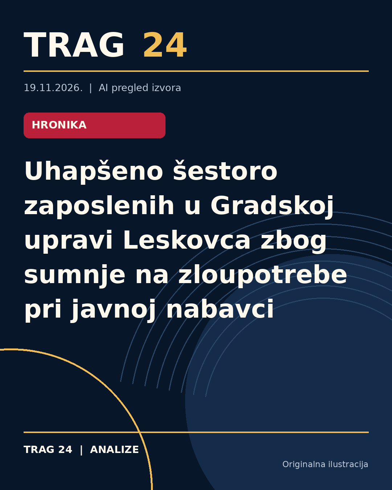

Uhapšeno šestoro zaposlenih u Gradskoj upravi Leskovca zbog sumnje na zloupotrebe pri javnoj nabavci

ŠTA SE DOGODILO
Policija je, po nalogu Višeg javnog tužilaštva u Nišu, uhapsila šestoro zaposlenih u Gradskoj upravi Leskovca zbog sumnje da su počinili zloupotrebe vezane za javne nabavke. Osim njih, za još jednom osobom se traga. Osumnjičeni su zadržani do 48 časova, nakon čega će biti privedeni tužilaštvu.
HRONOLOGIJA
Osumnjičeni su uhapšeni u okviru istrage koju je pokrenulo Više javno tužilaštvo u Nišu preko Posebnog odeljenja za suzbijanje korupcije. Z. N., kao rukovodilac i šef Odeljenja za javne nabavke, potpisao je 16. aprila 2023. godine ugovor vredan preko 80 miliona dinara za izgradnju saobraćajnice kod Gradskog stadiona „Dubočica“, iako su budžetom i planom javnih nabavki predviđena sredstva od oko 41 milion dinara. Ostali osumnjičeni su, shodno funkcijama, označeni kao saizvršioci u ovom krivičnom delu.
ŠTA NAVODE IZVORI
Izvor Telegraf ističe da je osumnjičeni rukovodilac, Z. N., potpisao ugovor za javnu nabavku znatno iznad predviđenih sredstava. Danas i Vreme navode identitet i funkcije uhapšenih, uključujući i članove Komisije za javne nabavke. Vreme dodatno donosi izjavu odbornika Nebojše Cakića koji pominje istragu o višestruko uvećanim troškovima radova na drugoj lokaciji, ulici Radoša Cerovića, u kojoj su takođe zadržani neki od osumnjičenih.
ŠTA JE POTVRĐENO
Potvrđeno je da su uhapšene šestoro zaposlenih u Gradskoj upravi Leskovca po nalogu Višeg javnog tužilaštva u Nišu zbog sumnje na zloupotrebe pri javnim nabavkama. Zadržavanje traje do 48 časova i očekuju se njihova saslušanja u Posebnom odeljenju za suzbijanje korupcije. Jasno je da postoji sumnja u postupke koji uključuju javne nabavke za saobraćajnicu kod Gradskog stadiona „Dubočica" i navodi o višestruko uvećanim troškovima radova na ulici Radoša Cerovića.
ŠTA NIJE POTVRĐENO
Nije potvrđeno ko je sedma osoba za kojom policija traga. Takođe, nema zvaničnih podataka o eventualnim rezultatima ispitivanja i daljim pravnim koracima. Informacije o tačnoj prirodi i obimu zloupotreba, kao i o tome da li su ugovori poništeni ili će biti pokrenuti sudski postupci, nisu dostupne. Navodi o višestruko uvećanim troškovima na drugoj lokaciji dolaze od političkog aktera, što nije potvrđeno zvaničnim izvorima.
ŠTA OSTАJE OTVORENO: Ostaje nejasno ko je osoba koja se još traži u ovoj istrazi i koliki je njen eventualni stepen umešanosti. Takođe, ostaje otvoreno kako će Tužilaštvo dalje postupati i da li će biti novih hapšenja ili optužbi u ovom predmetu. Nije poznato ni da li će biti preduzete mere za reviziju ili poništavanje problema u vezi sa pomenutim javnim nabavkama. Konačni sudski epilog i moguće posledice za osumnjičene ostaju nepoznate.
Izvori
- https://www.telegraf.rs/vesti/hronika/4436141-hapsenja-u-gradskoj-upravi-leskovca-sestoro-osumnjiceno-za-zloupotrebe-policija-traga-za-jos-jednom-osobom
- https://www.danas.rs/vesti/drustvo/uhapseno-sestoro-zaposlenih-u-gradskoj-upravi-leskovca-zbog-sumnje-na-zloupotrebe-pri-javnoj-nabavci/
- https://vreme.com/vesti/uhapseno-sestoro-zaposlenih-u-gradskoj-upravi-leskovca/
Ova analiza je pripremljena uz pomoć veštačke inteligencije na osnovu javno dostupnih izvora. Navodi izvora nisu nužno nezavisno potvrđeni.